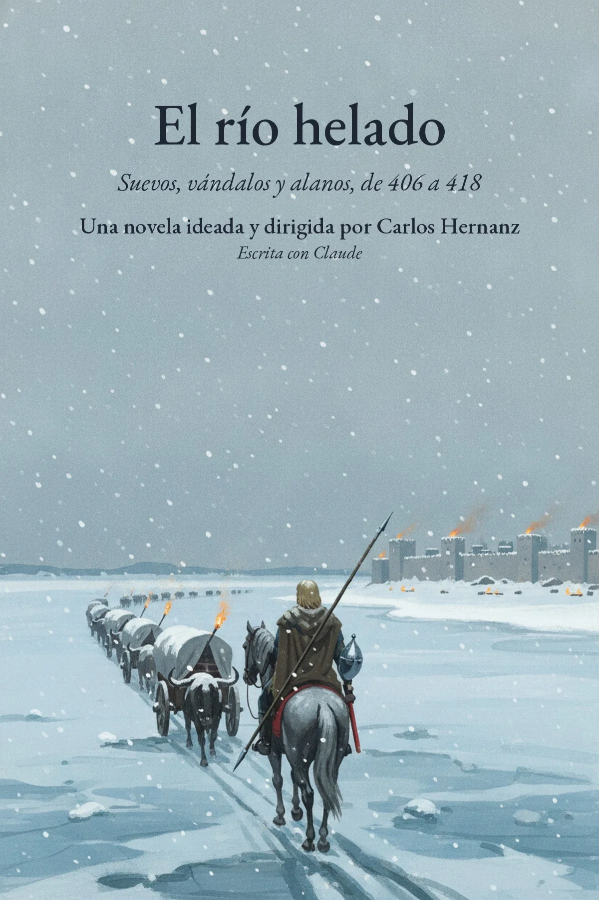

Prólogo
El viento del este
«Pueblos innumerables y ferocísimos han ocupado la Galia entera. Todo lo que hay entre los Alpes y los Pirineos, entre el océano y el Rin, lo han devastado el cuado, el vándalo, el sármata, el alano…» — San Jerónimo, carta a Ageruquia, año 409
Escandia, en el tiempo de la leyenda – orillas del Rin, diciembre de 406
Los viejos lo contaban en invierno, cuando la nieve tapaba las puertas y no había nada que hacer más que escuchar.
Decían que al principio no estaban aquí. Que sus abuelos, y los abuelos de sus abuelos, habían vivido en una isla del norte, tan al norte que en verano el sol no se acostaba y en invierno no se levantaba. Una tierra de rocas y de pinos negros, rodeada por un mar que se helaba de orilla a orilla, donde el trigo apenas granaba y los hijos nacían más deprisa de lo que la tierra podía darles de comer. Los godos la llamaban Escandia, y decían que de ella habían salido los pueblos como salen las avispas de un panal: muchos, de pronto y con ganas de picar.
Contaban que un rey llamado Berig mandó echar al mar tres barcos y que en ellos cruzó el pueblo entero hacia la costa del sur. Que dos barcos llegaron juntos y el tercero se rezagó, y que la gente de aquel barco lento se quedó con el mote de perezosos para siempre. Contaban que los vándalos habían salido de las mismas costas, o de otras parecidas, y que antes de ser vándalos habían tenido otro nombre que ya nadie recordaba. Contaban que los dioses viejos, Wodan y su mujer Frea, miraban desde lo alto aquellas marchas y escogían a quién darle la victoria según quién se les pusiera delante al salir el sol.
Nadie sabía si era verdad. Los viejos tampoco. Pero lo contaban igual, porque un pueblo que no sabe de dónde viene no sabe quién es.
Lo que sí era verdad es que llegaron al sur y se quedaron. Los godos junto al río Vístula, los vándalos en los bosques y las vegas del Óder, y los suevos un poco más al oeste, a lo largo del Elba, donde ya vivían desde mucho antes de que nadie se acordara. Talaron, araron, criaron cerdos y vacas. Aprendieron a trabajar el hierro mejor que nadie. Recogían en las playas del norte el ámbar, la piedra de miel que arde y huele a resina, y lo bajaban por los ríos hasta la frontera de un imperio del que al principio solo conocían las monedas y el vino: Roma. Pasaron generaciones. Los nombres de los dioses cambiaron poco, y los de los reyes mucho. La isla del norte se fue haciendo cuento.
Y durante siglos aquellas tierras fueron suyas. Hasta que el mundo volvió a moverse.
Esta vez no empezó en el norte, sino en el este. Tan lejos que ninguno de los que cruzaron el río aquella noche llegó a saberlo entero.
Empezó en la hierba. En un mar de hierba sin orillas que va desde el Danubio hasta donde sale el sol, donde el viento no encuentra nada que lo pare en mil leguas y los hombres miden la riqueza en caballos. Allí, junto al río que los griegos llamaban Tanais, vivían los alanos. No tenían casas ni las querían. Vivían en carros cubiertos de corteza y de fieltro, que movían detrás del ganado cuando se acababa el pasto, y decían que una casa es una tumba para un hombre vivo. No tenían templos. Clavaban una espada desnuda en la tierra y a ella rezaban, porque la espada era su dios. Despreciaban a los viejos que morían en la cama, y llamaban dichoso al que caía en la batalla. Eran altos, de pelo claro, y los romanos que alguna vez los vieron dijeron que su mirada daba miedo aunque no estuvieran enfadados.
Eran el pueblo más temido de la estepa. Hasta que llegó otro.
Nadie sabe bien de dónde salieron los hunos. Los alanos dijeron después que habían brotado de la niebla del este, de más allá de los pantanos, como una plaga. Eran jinetes que parecían nacidos sobre el caballo: comían en él, dormían en él, negociaban sin bajarse de él. Tiraban con arcos cortos y curvos que mandaban la flecha más lejos que ningún arco conocido, y no cargaban de frente como los hombres honrados, sino que llegaban, herían y se iban, y volvían cuando el enemigo ya los creía lejos. Hacia el año 370 cayeron sobre los alanos del Tanais. Los mataron por miles. A los que quedaron vivos se los llevaron con ellos, y los alanos aprendieron lo que ningún alano había aprendido nunca: lo que es huir.
Unos se doblaron y cabalgaron con los hunos. Otros cogieron sus carros y se fueron hacia el oeste, a donde el sol se pone, a donde está lo que queda de la luz.
Y al oeste estaban los godos.
Los godos tenían un rey viejo y glorioso, Ermanarico, que mandaba sobre más pueblos de los que podía contar. Cuando le llegó la noticia de lo que venía del este, hizo lo que se hacía entonces: reunir a los suyos y esperar. Pero los hunos no esperaban. Arrasaron las aldeas godas una detrás de otra, y el viejo rey, que había vencido a todos los que se le habían puesto delante, comprendió que esta vez no podría, y se quitó la vida antes de verlo. Su pueblo se partió como un tronco seco.
En el año 376 los romanos de la frontera del Danubio vieron en la orilla norte algo que no habían visto nunca. Una muchedumbre de godos, con mujeres, niños, carros y ganado, que llenaba la ribera hasta donde alcanzaba la vista, tendía las manos hacia el Imperio y pedía que la dejaran pasar. No pedían guerra. Pedían tierra y no morir. El emperador Valente les dejó cruzar, porque necesitaba soldados. Los funcionarios romanos les vendieron perros para comer a cambio de sus hijos. Dos años después, en Adrianópolis, los godos mataron al emperador y a dos tercios de su ejército en una tarde de agosto, y el mundo supo que el Imperio ya no era invencible.
Pero esta historia no es la de los godos.
La estepa siguió empujando. Cuando un pueblo se movía, empujaba al de al lado, y aquel al siguiente, como una ola que va de orilla a orilla de un estanque. Detrás de los godos, en las llanuras del Tisza y en los bosques de más al norte, vivían los vándalos, partidos en dos ramas. Los asdingos, que tenían reyes de una sola familia, criaban caballos en la llanura húngara. Los silingos vivían más arriba, en las tierras de bosque y río que mil años después se llamarían Silesia. Al lado de ellos, a lo largo del Danubio y en las colinas de Moravia, estaban los suevos, que eran muchos pueblos con un solo nombre: cuados y marcomanos, gentes que se anudaban el pelo sobre la sien derecha para que se les reconociera de lejos y que llevaban siglos asomándose a la frontera de Roma, unas veces para comerciar y otras para saquear.
Durante treinta años aguantaron. Treinta años de malas cosechas, de jinetes hunos cobrando tributo, de rumores que llegaban del este en invierno y de aldeas que una mañana amanecían vacías. Los niños que nacían oían hablar de los hunos antes de saber andar. Las madres los callaban diciendo: «Que vienen». Y nadie preguntaba quién.
En el año 405 un jefe godo llamado Radagaiso no aguantó más. Reunió a todos los que quisieron seguirle, que fueron decenas de miles, y bajó con ellos a Italia, a la propia casa del emperador. No volvió. El general Estilicón, que gobernaba el Imperio de Occidente en nombre de un emperador niño, lo cercó en las colinas de Fiésole en el verano de 406, le cortó la cabeza y vendió a sus hombres por esclavos. Vendió tantos que en los mercados de Italia un hombre se compraba por una sola moneda de oro, como se compra una res.
Pero para salvar Italia Estilicón había tenido que vaciar la frontera. Se llevó las legiones de la Galia. Dejó las torres del Rin con guarniciones de viejos, de reclutas y de francos, que eran bárbaros pagados para vigilar a otros bárbaros. Y los pueblos de más allá del río lo supieron, porque esas cosas se saben siempre.
Así que aquel año se pusieron en marcha. No todos a la vez ni todos por lo mismo. Los vándalos asdingos con su rey Godegisel, los silingos detrás. Los alanos que no habían querido doblarse ante los hunos, con sus reyes Respendial y Goar. Los suevos de las colinas, con sus carros de bueyes y sus semillas guardadas en sacos de cuero, porque algunos no iban a la guerra: iban a buscar un sitio donde sembrar. Subieron por los valles del Meno y del Neckar, se juntaron en la orilla derecha del Rin, frente a la ciudad romana de Mogontiacum, y allí esperaron, porque el río es ancho y frío y no tenían barcos.
Eran muchos. Nunca nadie los contó. Los romanos que los vieron desde la muralla dijeron que cien mil, doscientos mil, que llenaban el horizonte. Los que estaban dentro no se sentían tantos. Se sentían cansados, y con hambre, y con miedo de lo que dejaban atrás más que de lo que tenían delante.
Aquel invierno fue de los malos. La nieve llegó pronto. El viento del este, el mismo que había traído a los hunos, bajó por los valles con un frío que partía las piedras. Los viejos dijeron que no recordaban nada igual. Los niños se dormían pegados a los bueyes para no helarse. Y una mañana de finales de diciembre los que se asomaron a la orilla vieron que el Rin, el gran río que había sido la frontera de Roma durante cuatrocientos años, ya no corría.
Estaba quieto. Estaba blanco. Se podía andar sobre él.
En la otra orilla, las hogueras de los centinelas romanos parecían muy pequeñas.
La última noche del año empezaron a cruzar.
El hielo
Orilla derecha del Rin, frente a Mogontiacum – última noche del año 406

Los suevos
El padre los despertó antes de que hubiera luz, y Teudo supo por su cara que era hoy.
No dijo nada. Le puso la mano en el hombro, apretó una vez y salió del refugio de ramas a ver los bueyes. Teudo se quedó quieto debajo de las pieles, escuchando. Fuera crujía todo: la nieve bajo las botas, los ejes de los carros, el aliento de los animales. Hasta el silencio crujía. Hacía tanto frío que dolía respirar por la nariz.
A su lado dormía Ricila, hecho un ovillo contra la espalda de la madre. Tenía cinco años y dormía como duermen los niños pequeños, con la boca abierta y los puños cerrados, como si en sueños tuviera que agarrarse a algo. Teudo tenía diez y ya no dormía así. Desde que salieron de las colinas, en otoño, dormía a trozos, con un ojo abierto, igual que el padre.
—Teudo —dijo la madre sin moverse—. Ve a por agua mientras haya.
No había agua. Había hielo. Teudo cogió el caldero de cobre y el hacha pequeña y bajó entre los carros hacia el río, por un sendero que miles de pies habían convertido en barro duro como piedra. El campamento se extendía a lo largo de la orilla hasta donde alcanzaba la vista, una ciudad de carros, de fuegos mal encendidos, de perros flacos y de gente envuelta en todo lo que tenía. Algunos llevaban ahí desde antes de la luna nueva. Habían llegado de todas partes: suevos de las colinas como ellos, que se anudaban el pelo sobre la sien derecha; vándalos de las llanuras, más altos, que hablaban casi igual pero cantaban distinto; y los alanos, que no se parecían a nadie, que vivían en sus carros cubiertos de fieltro y no se bajaban del caballo ni para mear.
Abajo, el río.
Teudo lo había visto el primer día, cuando llegaron, y le había dado miedo. Era más ancho que cualquier cosa que hubiera visto, gris y rápido, con remolinos que arrastraban ramas y trozos de hielo. Al otro lado, lejos, se veían unas murallas y unas torres, y de noche, unos fuegos pequeños. El padre había dicho que aquello era Roma. Teudo había preguntado si Roma era una ciudad o un rey o un dios, y el padre se había quedado pensando y había dicho: «Las tres cosas».
Ahora el río no se movía. Era una llanura blanca y quieta, con grietas como venas y montones de nieve que el viento había ido amontonando. Unos hombres ya andaban por encima, a lo lejos, tanteando con lanzas, golpeando el hielo con los pies. Teudo partió el hielo de la orilla con el hacha, llenó el caldero de trozos y se quedó un momento mirando a esos hombres. Andaban sobre el agua. Pensó que si se lo contaba a su abuelo, que se había quedado en las colinas porque ya no podía andar, no se lo iba a creer.
Cuando volvió, el padre ya había uncido los bueyes. Eran dos, Rojo y el Viejo, y eran lo único que les quedaba de lo que habían tenido. La vaca se la habían comido en noviembre. El carro llevaba lo que importaba: los sacos de cuero con la semilla de cebada y de trigo, que nadie podía tocar aunque tuviera hambre; el telar desmontado de la madre; las herramientas; dos lanzas; las pieles. Y debajo de todo, envuelto en un trapo, el cuchillo del abuelo, con el mango de hueso.
—Hoy no se come —dijo el padre—. Se come al otro lado.
Nadie protestó. La madre derritió el hielo y les dio agua tibia con un poco de grasa, y Ricila se la bebió medio dormido y preguntó si ya habían llegado.
—Todavía no —dijo la madre—. Hoy cruzamos el río.
—¿Por encima?
—Por encima.
Ricila abrió mucho los ojos y se despertó del todo.
Esperaron casi todo el día. Cruzar no era solo echar a andar. Los jefes discutían, iban y venían, mandaban gente a mirar el hielo y gente a mirar las murallas del otro lado, y la noticia corría de carro en carro, cambiada cada vez: que los romanos no tenían soldados, que los tenían escondidos, que el hielo aguantaba un carro pero no dos, que aguantaba cien. Al mediodía oyeron gritos río arriba, donde acampaban los vándalos, y un ruido que Teudo no supo qué era hasta que el padre se puso de pie de golpe y dijo, muy bajo: «Hierro». Era ruido de pelea, lejos. El padre cogió una lanza y se quedó mirando hacia allí con la mandíbula apretada hasta que el ruido paró. Luego volvió a sentarse y no explicó nada.
Empezaron a moverse cuando ya caía la tarde.
El padre iba delante de los bueyes, tirando del Viejo por el ronzal. La madre iba al lado del carro con Ricila en brazos. Teudo iba detrás, con una vara, porque su trabajo era que Rojo no se parase. Delante, detrás, a los lados, cientos de carros bajaban la orilla a la vez, despacio, y entraban en el hielo.
El ruido cambió. Teudo lo notó en los pies antes que en los oídos. La tierra sonaba sorda; el hielo sonaba hueco, como el tronco de un árbol podrido. Cada paso de los bueyes hacía un golpe que bajaba hacia el agua negra de debajo y no volvía. A veces, lejos, se oía un crujido largo, como un trueno pequeño, y toda la gente se quedaba quieta a la vez, mil caras mirando el suelo, y luego, poco a poco, volvían a andar.
—No mires abajo —le dijo el padre sin volverse—. Mira la espalda del buey.
Teudo miró la espalda del buey. Tenía escarcha en el pelo. El viento soplaba de lado, del este, y traía nieve fina que se metía en los ojos.
A mitad del río, Ricila empezó a llorar.
No lloraba por miedo. Lloraba porque se le había caído algo. La madre intentó callarlo, pero él se retorcía y señalaba hacia atrás, hacia el hielo, y repetía una palabra que Teudo tardó en entender: «El caballo. El caballo».
Era un caballito de madera. El abuelo se lo había tallado con ese mismo cuchillo de mango de hueso, la noche antes de que se fueran, sentado junto al fuego con las manos que ya le temblaban. Tenía las patas cortas y una crin de pelo de vaca pegada con resina. Ricila no lo soltaba nunca. Lo había llevado agarrado todo el viaje, en el puño, dormido y despierto, y ahora estaba ahí atrás, en el hielo, un punto oscuro entre la nieve pisoteada, y los carros de detrás venían hacia él.
—Déjalo —dijo la madre—. Ya te hará otro el padre.
Pero el padre no sabía tallar. Todos lo sabían. Y el abuelo estaba en las colinas, y no iba a tallar nada nunca más.
Teudo no lo pensó. Dejó la vara apoyada en el carro y echó a correr hacia atrás.
Oyó gritar a la madre. Oyó al padre decir su nombre una vez, fuerte. No se paró. Corrió entre la gente que venía de frente, esquivando piernas, bueyes, un hombre que le dio un empujón, una mujer que le gritó algo en vándalo. Resbaló, cayó de rodillas, se levantó. El hielo bajo él crujió y él no supo si había sido de verdad o si lo había oído dentro de la cabeza. Vio el caballito justo cuando una rueda de carro estaba a un paso de él. Se tiró al suelo, lo cogió y rodó, y la rueda pasó tan cerca que notó el aire.
Se quedó tumbado un momento sobre el hielo, boca arriba, con el caballito apretado contra el pecho. Arriba, el cielo era blanco. Debajo de su espalda, a un palmo, corría el agua. Lo sintió. Juraría toda su vida que la sintió correr.
Cuando volvió, el padre le dio una bofetada que le volvió la cara, y luego lo abrazó tan fuerte que le dolieron las costillas. No dijo nada. La madre lloraba. Ricila cogió el caballito con las dos manos, lo miró, comprobó que tenía las cuatro patas, y dejó de llorar como si alguien hubiera cerrado una puerta.
Llegaron a la otra orilla cuando ya era de noche. Teudo no se acordó después de cómo subieron la pendiente, ni de cómo se encendió el fuego. Se acordó de una sola cosa: que al pisar la tierra del otro lado se dio la vuelta y miró el río, y que el río seguía blanco, quieto, cubierto de gente y de antorchas, y que de pronto le pareció que no era un río, sino una puerta. Y que la habían cruzado. Y que detrás ya no había nada.
Los vándalos
Los francos llegaron con la primera luz, cuando las mujeres estaban encendiendo los fuegos.
Gisa estaba agachada junto a las brasas con la niña sujeta a la espalda en un paño, soplando para que prendiera la leña húmeda, cuando oyó a los perros. No ladraban como ladran a un zorro. Ladraban todos a la vez, hacia el bosque, y luego se callaron todos a la vez, y ese silencio fue lo que le hizo levantarse.
—Guntario.
Su marido ya estaba de pie. Tenía la espada en la mano, la de su padre, y el escudo de tilo pintado de rojo en el otro brazo. Detrás de él, por todo el campamento de los asdingos, los hombres salían de los carros a medio vestir, cogiendo lo que tenían cerca. Alguien tocó un cuerno. Lejos, entre los árboles de la orilla, se veían formas moviéndose, muchas, y un brillo que Gisa conocía: hachas.
—Al carro —dijo Guntario—. Métete debajo de las pieles con Asta. No salgas.
—Guntario...
Él la miró un instante. Tenía la barba blanca de escarcha y los ojos muy tranquilos, los ojos que ponía cuando algo era muy grave, los mismos que había puesto cuando murió su primer hijo, el que no llegó a cumplir el año. Le tocó la cara a la niña con un dedo.
—No salgas.
Y se fue.
Gisa no se metió debajo de las pieles. Se metió en el carro, sí, porque no era tonta, pero se quedó de rodillas junto a la abertura de la lona, con la niña en brazos, mirando. Asta tenía dos años y no entendía nada. Miraba también, con la boca abierta, agarrada al pelo de su madre.
Los francos eran gente del río. Vivían en esta orilla desde hacía mucho, y Roma les pagaba en oro y en trigo para que guardaran la frontera de los que venían de más allá. Eso decían los hombres. Gisa nunca había visto uno de cerca. Ahora los vio salir del bosque corriendo, sin caballos, con escudos redondos y unas hachas cortas que lanzaban de lejos dando vueltas, y que se clavaban en los escudos vándalos y los partían, o se clavaban en los hombres. Gritaban algo en una lengua que se parecía a la suya, y eso fue lo peor: que casi se entendía.
Los vándalos fueron a su encuentro sin formar, como pudieron. Gisa vio a Guntario entre ellos, el escudo rojo, y luego dejó de verlo.
No supo cuánto duró. Mucho. El ruido no se parecía a nada: un golpear de madera y hierro que no paraba, gritos, caballos relinchando, el cuerno sonando una y otra vez. Hombres que volvían hacia los carros cojeando, sangrando, y otros que no volvían. En el carro de al lado una mujer joven cantaba en voz baja, sin parar, una canción de cuna, con los ojos cerrados. Gisa se dio cuenta al cabo de un rato de que ella también estaba cantando.
A media mañana pasó corriendo entre los carros un muchacho con la cara llena de sangre gritando que el rey había caído. Godegisel. El rey de los asdingos, el que los había traído hasta aquí. Gisa lo había visto una sola vez, de lejos, un hombre gordo y viejo con un manto azul. Muerto. Las mujeres empezaron a gemir, y el gemido corrió de carro en carro, y Gisa apretó a la niña y pensó, con una claridad que le dio vergüenza: «Que se muera el rey. Que no se muera Guntario».
Entonces los francos llegaron a los carros.
Los vio a veinte pasos. Eran cinco o seis, y uno llevaba un hacha llena de sangre hasta el mango, y miraba los carros como se mira un huerto. Gisa sacó el cuchillo del cinto. Era un cuchillo de cocina, para la carne. Puso a Asta detrás de ella, contra los sacos, y se quedó de rodillas en la abertura, con el cuchillo delante, y pensó que al primero que subiera le iba a abrir la cara.
Y entonces la tierra empezó a temblar.
No lo oyó: lo sintió. Por las rodillas, por las manos apoyadas en las tablas del carro. Un temblor que venía del sur, de río abajo, y que crecía. Los francos se quedaron quietos y miraron hacia allí. Gisa miró también.
Por la orilla, entre la niebla, venían caballos. Cientos. Miles, le pareció después, aunque no sabía contar tanto. Jinetes altos, con lanzas largas como dos hombres, con cascos puntiagudos y unas capas que volaban detrás, y venían sin gritar, en silencio, a galope tendido, con el ruido de los cascos subiendo del suelo como un trueno que no termina.
Los alanos.
Los francos echaron a correr. No les dio tiempo. Gisa vio cómo la primera fila de jinetes entraba en ellos como entra un cuchillo en la manteca, y apartó la cara, y tapó los ojos a la niña, que no lloraba, que miraba todo con la boca abierta, y que luego, cuando fue mayor, juraría que se acordaba de los caballos, aunque eso no era posible.
Guntario volvió al atardecer.
Volvió andando, apoyado en un hombre que Gisa no conocía. Un muchacho. Un alano, alto y flaco, con la cara curtida por el viento y el pelo claro, casi blanco, recogido atrás. Llevaba a Guntario medio a hombros. Guntario tenía una herida en el muslo, atada con un trapo, y la cara gris, y cuando vio a Gisa sonrió como un tonto.
—Este —dijo, señalando al muchacho con la barbilla—. Este me ha sacado de debajo de tres francos.
El muchacho no dijo nada. No entendía su lengua, o no del todo. Dejó a Guntario sentado contra la rueda del carro, se enderezó y se quedó mirando a la niña, que lo miraba desde los brazos de Gisa, muy seria.
Guntario se llevó la mano al hombro, al manto, y se soltó la fíbula. Era un broche de bronce con forma de pájaro, con dos piedras rojas por ojos, que había sido de su padre y del padre de su padre. Se la tendió al muchacho.
El alano la miró. Negó con la cabeza.
Guntario insistió. Le cogió la mano, le puso la fíbula en la palma y le cerró los dedos encima. Le dijo algo despacio, en vándalo, mirándole a los ojos, y Gisa, que lo oyó, supo que no era una frase de cortesía, sino una de las que no se dicen dos veces en la vida.
—Mi casa es tu casa. Mientras yo viva y mientras viva mi sangre.
El muchacho se quedó un momento con el puño cerrado. Luego asintió una sola vez, se dio la vuelta y se fue hacia los caballos sin mirar atrás.
Esa noche, mientras los suevos y los alanos empezaban a cruzar el río, los asdingos se quedaron en la orilla enterrando a sus muertos en el suelo helado, con picos, a la luz de las hogueras. Eran tantos que no les dio tiempo a enterrarlos a todos. Gisa ayudó a lavar a la mujer joven del carro de al lado, la que cantaba, a la que un hacha le había alcanzado la cabeza a media tarde cuando creía que ya había pasado todo. No sabía su nombre. Nunca lo supo.
Asta durmió toda la noche. Al despertar, por la mañana, lo primero que hizo fue señalar hacia el río y decir: «Caballos».
Los alanos
Arsak tenía dieciocho años y era la primera vez que cargaba de verdad.
Había combatido antes. Escaramuzas, robos de ganado, persecuciones en la llanura, flechas tiradas de lejos a gente que huía. Eso sabía hacerlo cualquier alano desde los doce años. Pero una carga, una carga de verdad, con toda la caballería del rey Respendial en una sola línea, lanza contra lanza, rodilla contra rodilla, eso no lo había hecho nunca. Su padre sí. Su padre había cargado contra los godos, contra los romanos y contra los hunos, y tenía la cara cosida de cicatrices, y decía que la primera vez uno no se entera de nada y que eso era una suerte.
Tenía razón.
Estaban río abajo, a media mañana de camino, cuando llegó el jinete vándalo con el caballo reventado y la noticia: los francos habían caído sobre los asdingos, el rey Godegisel estaba muerto, los vándalos se deshacían. Respendial no lo pensó mucho. Los alanos no lo pensaban nunca mucho. Ordenó montar, y en lo que se tarda en ensillar un caballo, cuatro mil jinetes estaban en marcha por la orilla, al trote primero, luego más rápido.
Arsak iba en la tercera fila, al lado de su padre. Llevaba el kontos, la lanza larga de fresno, apoyada en el hombro, y la espada del lado izquierdo, y debajo de la túnica, colgada del cuello, la bolsita de cuero con la tierra de la tumba de su madre, junto al Tanais, que no había visto nunca porque había nacido ya en el camino. Su padre le había dicho que esa tierra lo protegería. Arsak no lo creía del todo, pero la llevaba igual.
Antes de salir, como siempre, el padre había clavado la espada en la tierra helada y los dos se habían arrodillado delante, un momento, sin decir nada. Así se rezaba. No hacía falta decir nada; la espada ya sabía.
Vieron a los francos desde lejos, entre la niebla de la orilla: una masa oscura de hombres a pie metida entre los carros de los vándalos. Nadie dio una orden. No hacía falta. La línea se fue abriendo sola, los caballos se pusieron al galope, las lanzas bajaron todas a la vez, y Arsak bajó la suya y la sujetó con las dos manos contra el costado del caballo como le habían enseñado, y dejó de pensar.
Después no se acordó del choque. Se acordó de antes y de después, pero no del momento. Se acordó de un franco con un hacha levantada que lo miraba con la boca abierta, muy joven, más joven que él. Y luego se acordó de que el kontos ya no estaba en sus manos y de que tenía la espada, y de que el caballo estaba metido entre gente que gritaba, y de que el brazo le subía y le bajaba solo.
Fue entonces cuando vio al vándalo.
Estaba en el suelo, junto a un carro volcado, con un escudo rojo partido en dos. Tenía tres francos encima. Se defendía tumbado, con la espada corta, como un oso acorralado, y uno de los francos ya le había dado en la pierna y levantaba el hacha otra vez. Arsak no lo pensó. Tiró de las riendas, echó el caballo encima de los tres, golpeó al del hacha en la nuca con el canto de la espada, y el franco cayó. Los otros dos huyeron. Arsak saltó del caballo, cogió al vándalo por debajo de los brazos y lo arrastró contra el carro, y el vándalo le agarró la muñeca con una fuerza que no parecía de herido y le dijo algo que Arsak no entendió.
Lo llevó a su campamento al atardecer, cuando ya no quedaban francos vivos en la orilla. Pesaba como un buey. Hablaba todo el rato. Tenía una mujer de ojos grises que lo esperaba en un carro con un cuchillo de cocina en la mano, y una niña pequeña que no lloraba y que miró a Arsak como si quisiera acordarse de su cara.
Luego, el vándalo le dio la fíbula.
Arsak no la quería. Un alano no cobra por salvar a un hombre en la batalla. Pero el vándalo no le soltaba la mano y le decía algo serio, despacio, mirándole a los ojos, y Arsak entendió lo bastante para saber que, si la rechazaba, le ofendería. Así que la guardó.
Esa noche, mientras los suyos cruzaban el río, se la enseñó a su padre junto al fuego. Era un pájaro de bronce con dos piedras rojas por ojos, frío al tacto, gastado por los dedos de mucha gente.
—Un vándalo —dijo el padre, y le dio vueltas entre los dedos—. Te ha dado su casa.
—No la quiero.
—Ya —dijo el padre, y se la devolvió—. Pero ahora la tienes.
Cruzaron el Rin al amanecer del primer día del año. El hielo crujía bajo los cascos y los caballos resoplaban de miedo, con las orejas atrás, y Arsak bajó a pie y llevó al suyo de la rienda, hablándole bajo, como se habla a un niño. A mitad del río miró hacia atrás. En la orilla que dejaban se veían todavía las hogueras de los vándalos y unos bultos alineados en la nieve que eran muertos esperando su turno para la tierra.
Llevaba la fíbula en el puño, dentro de la manga. No la había soltado en toda la noche. No sabía por qué.
Al otro lado le esperaba la Galia, y Roma, y todo lo que había en el mundo. Arsak tenía dieciocho años y una espada y un caballo, y por primera vez en su vida tenía también una casa, aunque no supiera dónde estaba.